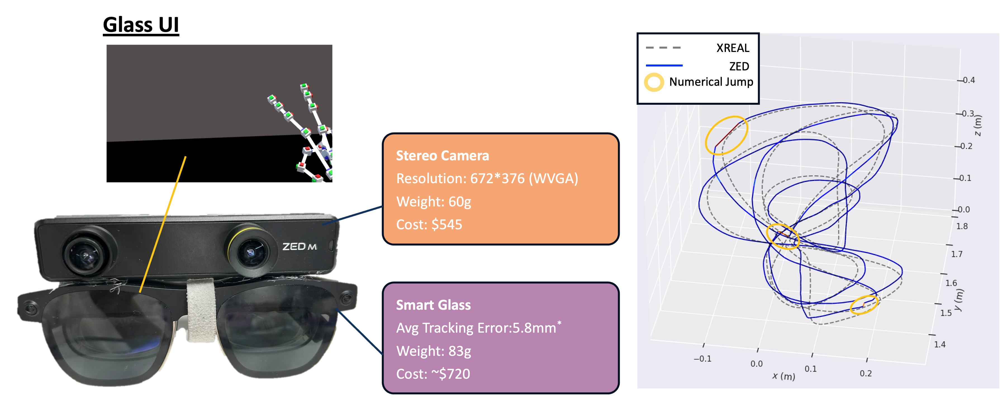
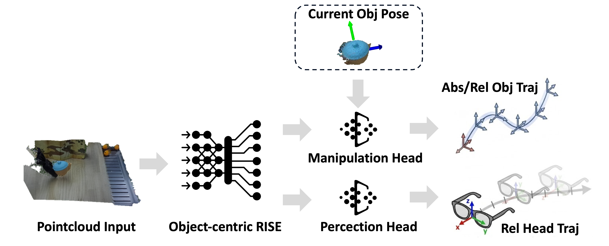

Method Overview

The system is organized as a complete perception-manipulation pipeline. During data collection, a human operator performs tasks with bare hands while wearing smart glasses equipped with stereo vision and 6-DoF head tracking.
During post-processing, the system estimates depth, reconstructs point clouds, segments hands and manipulated objects, and extracts object trajectories in a unified world frame. The learned 3D policy then predicts both manipulation actions and head movement so that the robot can reproduce active perception at test time.

Hardware and Interface
ActiveGlasses combines XREAL Air 2 Ultra for head tracking with a ZED Mini stereo camera for perception. A lightweight on-device interface supports episode control through gesture and audio feedback.
We use the XREAL device specifically for stable 6-DoF trajectory tracking, and use that head motion signal as supervision for active-viewpoint behavior.

Policy Design
The policy uses point clouds in the world frame as input and predicts absolute object trajectories together with relative head motion. This representation stabilizes active-view observations and improves cross-embodiment transfer.
The dashed box and the abs/rel labels indicate the ablation space studied in the paper: we explicitly compare current-object-pose conditioning and absolute-versus-relative trajectory representations.